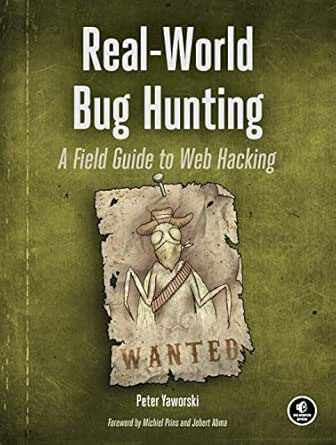

A cibersegurança refere-se a quaisquer tecnologias, práticas e políticas que atuem na prevenção de ataques cibernéticos ou na mitigação do seu impacto. A cibersegurança tem como objetivo proteger sistemas de computador, aplicações, dispositivos, dados, ativos financeiros e pessoas contra ransomwares e outros malwares, golpes de phishing , roubo de dados e outras ameaças cibernéticas. Ademais a cibersegurança ela é dividida em três grupos, o blue team, red team e também em desenvolvimento seguro.
A cibersegurança é importante porque os ataques cibernéticos e o crime cibernético têm o poder de interromper, prejudicar ou destruir empresas, comunidades e vidas. Ataques cibernéticos bem-sucedidos levam ao roubo de identidade, extorsão pessoal e corporativa, perdas de informações confidenciais e dados críticos para os negócios, interrupções temporárias nos negócios, perdas de negócios e clientes e, em alguns casos, fechamento de empresas.
A Engenharia Social é uma técnica de manipulação psicológica usada por cibercriminosos para enganar as pessoas e fazê-las realizar ações específicas ou divulgar informações confidenciais. Em vez de explorar falhas em softwares ou sistemas, a engenharia social explora a confiança, o medo e a falta de atenção das vítimas.
O Phishing é o tipo mais comum de ataque de engenharia social. Geralmente, ocorre por meio de e-mails, mensagens de texto ou sites falsos que se passam por instituições legítimas, como bancos, empresas ou órgãos do governo. O objetivo é "pescar" informações sensíveis da vítima, como:
Malware, abreviação de "software malicioso", é um termo genérico para qualquer software ou código criado com a intenção de danificar, invadir ou obter acesso não autorizado a um sistema de computador. Existem vários tipos de malware, incluindo:
Ransomware é um tipo específico de malware que sequestra os dados da vítima. Ele funciona criptografando arquivos importantes no computador ou até mesmo bloqueando o acesso ao sistema operacional inteiro. Após a infecção, os cibercriminosos exibem uma mensagem exigindo um pagamento (resgate), geralmente em criptomoedas, em troca da chave para descriptografar os arquivos e restaurar o acesso.
Este termo se refere à prática de obter e utilizar ilegalmente as informações de login de um usuário (como nome de usuário e senha) para acessar sistemas, contas e dados de forma não autorizada. O roubo pode ocorrer por meio de várias técnicas, como phishing, uso de malware (keyloggers, que registram o que é digitado) ou ataques de força bruta, que tentam adivinhar a senha. Uma vez roubadas, as credenciais são usadas para cometer fraudes, roubar dados ou vender na dark web.
Ataques de IA (Inteligência Artificial) representam o uso de tecnologias de IA por cibercriminosos para criar ataques mais sofisticados, automatizados e difíceis de detectar. Exemplos incluem:
Uma ameaça interna é um risco de segurança que se origina de dentro de uma organização. Ela envolve indivíduos com acesso legítimo aos sistemas e dados da empresa, como funcionários, ex-funcionários, prestadores de serviço ou parceiros de negócios. Essas ameaças podem ser:
O Blue Team é responsável pela defesa cibernética, implementando processos e tecnologias que protejam os sistemas da empresa contra ataques. Diferente dos invasores, que só precisam explorar uma única falha para causar danos, os profissionais do Blue Team devem pensar em estratégias para mitigar múltiplas vulnerabilidades, criando uma camada de segurança robusta.
A atuação do Blue Team é abrangente e envolve várias áreas específicas:
Assim como o Blue Team representa a defesa, o Red Team representa o ataque controlado. Com uma abordagem ofensiva, o Red Team realiza testes que simulam ataques reais, identificando vulnerabilidades antes que hackers maliciosos possam explorá-las
As atividades do Red Team incluem:
Esses testes são fundamentais para validar se as defesas implementadas pelo Blue Team são realmente eficazes. O Red Team simula ações de um invasor, explorando fraquezas e expondo lacunas que poderiam comprometer a segurança do ambiente. Esse trabalho não só aprimora a proteção da organização, mas também permite que o Blue Team melhore constantemente suas estratégias defensivas.
A colaboração entre Blue Team e Red Team é fundamental para criar um ambiente de segurança eficaz. O Red Team realiza ataques simulados que testam a capacidade de resposta do Blue Team. Com base nesses exercícios, o Blue Team ajusta suas estratégias e melhora suas defesas. Essa interação permite que a organização identifique lacunas na segurança e implemente melhorias continuamente. Além disso, a troca de informações entre as equipes é crucial. O feedback do Red Team sobre as vulnerabilidades encontradas ajuda o Blue Team a priorizar suas ações, enquanto as defesas desenvolvidas pelo Blue Team desafiam o Red Team a inovar suas técnicas de ataque. Essa dinâmica cria um ciclo de aprendizado e aperfeiçoamento constante.
Aqui estão alguns livros muito interessante para quem tem interesse em começar na área da cibersegurança:
| Livro | Descrição | Imagem |
|---|---|---|
| A Arte de Enganar (The Art of Deception) por Kevin Mitnick | Este livro é escrito por um dos hackers mais famosos da historia, focado em engenharia social. Ele mostra que a falha mais explorada em qualquer sistema é a humana. | |
| Ghost in the Wires por Kevin Mitnick | É a autobiografia de Mitnick. Parece um thriller de espionagem e mostra como ele realizava suas invasões, a adrenalina da perseguição e o raciocínio por trás de suas ações. É inspirador e muito divertido de ler. | |
| Hacking: The Art of Exploitation por Jon Erickson | Este é um livro clássico da ciberseguranca. Voltado para práticas, este livro aborda técnicas que vao além de ferramentas prontas. Ele te ensina programação em (C e Assembly) e redes a partir da perspectiva de um hacker, para que você entenda como as falhas realmente funcionam em um nível baixo. | |
| Real-World Bug Hunting por Peter Yaworski | Focado em segurança web, este livro é mais moderno e prático. Ele usa exemplos reais de falhas encontradas em programas de bug bounty (recompensa por falhas) de grandes empresas. Você aprenderá sobre as vulnerabilidades mais comuns e como caçá-las. |  |